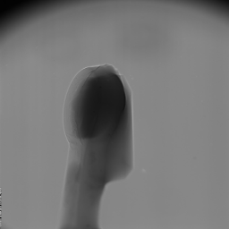

Previewing#
Previewing is the way to change the dimensions of the input data by reducing them. It also can be interpreted as a data cropping or data slicing operation.
Reduction of the input data is often done to remove unnecessary/useless information, and to accelerate the processing time. It is also recommended to use when searching for optimal parameter values, see Parameter Sweeping. Skip to Enabling data preview for information about how to use it in HTTomo.
Previewing in the loader#
Previewing is an important part of the loader (see HTTomo Loaders). Here,
a brief explanation is given on how to use the preview parameter in the
standard_tomo loader.
Note
HTTomo assumes that the input data is a three dimensional (3D) array, where the 1st axis is the angular dimension, the 2nd axis is the vertical \(Y\)-detector dimension and the 3rd axis is the horizontal \(X\)-detector dimension (see Fig. 12).

Fig. 12 3D projection data and their axes#
Structure of the preview parameter value#
The value of the preview parameter has three fields, one for each axis in
the 3D input data, and also a start and stop field for each
dimension:
preview:
angles:
start:
stop:
detector_y:
start:
stop:
detector_x:
start:
stop:
Warning
Note that previewing in the angles dimension is not yet
supported by loaders in HTTomo, but ignoring data along this dimension is a
feature that will be coming in a future release.
Full data preview#
If the preview parameter is omitted entirely in the loader configuration,
then the full data will be selected and no cropping/previewing will be applied. Ie,
previewing is disabled in this case.
Enabling data preview#
In order to change the input data dimensions and accelerate the processing pipeline, one can do two of the following operations.
Note
Although this is optional, by doing this the size of the reconstructed volume is reduced without any detriment to the data, which can result in a significant speedup in post-processing analysis time.
In the figure below the projections have been cropped vertically and horizontally.
Before cropping  and after
{kind=link}
{kind=link}
Reduce the size of the vertical dimension (detector- \(Y\)) by removing blank regions in your data (top and bottom cropping), see Fig. 13. The blank areas, if any, can be established by looking through the sequence of raw projections.
preview: detector_y: start: 200 stop: 1800
This will crop the data starting at slice 200 and finishing at slice 1800, therefore resulting in the data with the vertical dimension equal to 1600 pixels. In Python this will be interpreted as
[:,200:1800,:].
{kind=link}
Fig. 13 Cropping detector- \(Y\) dimension of 3D projection data#
Reduce the size of the horizontal dimension (detector- \(X\)) by removing blank regions in your data (cropping the left and right sides), see Fig. 14.
Warning
Please be aware that cropping this dimension can create issues with the automatic centering and potentially lead to reconstruction artefacts, especially if iterative methods are used. It is general practice to be more conservative with the cropping of the \(X\) detector dimension.
preview: detector_x: start: 100 stop: 2000
In Python this will be interpreted as
[:,:,100:2000].

Fig. 14 Cropping detector- \(X\) dimension of 3D projection data#
One can combine vertical and horizontal cropping with:
preview:
detector_y:
start: 200
stop: 1800
detector_x:
start: 100
stop: 2000
Using begin, mid and end keywords with offsets#
The begin, mid, end keywords can be used in setting up start, stop preview parameters. The main purpose of those keywords is
to help a user to set the preview without using actual data indices. It can be a convenient and a quick way to set the preview without any prior
knowledge about the input data sizes.
To unlock the full potential of this feature, we recommend using the begin, mid, end keywords together with the offset parameters.
The preview parameters start_offset and stop_offset can be used
to compliment start, stop preview parameters respectively.
Here is an example how the keywords and offsets can be used in the loader’s preview:
preview:
detector_x:
start: begin
start_offset : 100
stop: end
stop_offset : -100
detector_y:
start: mid
start_offset : -50
stop: mid
stop_offset : 50
In the example above, we crop both of data dimensions detector_x and detector_y. With detector_x, the data is cropped with +100 pixels offset from the first index (begin) and -100 pixels offset from the last index end.
In Python this would be an equivalent to perform the following slicing of that dimension [100:-100]. And with detector_y dimension, we slice by taking
a 100 pixels wide chunk centered around the middle (mid) index of that dimension.
Note
The begin parameter defines the first index of the chosen dimension, mid defines the middle index, and end defines the last index.
The sole use of mid value#
The detector_y and detector_x dimension fields also support the
value mid in addition to the start and/or stop fields. For instance,
one can extract the the middle slice of detector_y with:
preview:
detector_y:
mid
Specifying mid for either of these dimensions will result in the middle
three slices of that dimension being selected.
Warning
The angles dimension field doesn’t support the value
mid
Rules for omitting fields in the preview parameter value#
One may have noticed that, in many of the preview parameter value examples
above, some fields were omitted. It’s infrequently needed to crop all three
dimensions, and sometimes when cropping, only either the start or end is of
interest.
With these in mind, along the general notion that anything is more readable when unnecessary information is omitted, there are several ways in which the
dimension fields
start/stop fields
in the preview parameter value can be omitted in the process list, and
still achieve the desired cropping behavior.
Omitting one or more dimension fields#
If any of the three top-level dimension fields are omitted, then no cropping will be applied to the omitted dimension(s).
If a top-level dimension is provided but given no value, then no cropping will be applied to that dimension either. Ie, the following configuration will select the entire input data and apply no cropping/previewing:
preview:
angles:
detector_y:
detector_x:
Omitting the start or stop fields#
For a given dimension field:
if the
startfield is omitted, then the start value is assumed to be 0if the
stopfield is omitted, then the stop value is assumed to be the very last element in that dimension